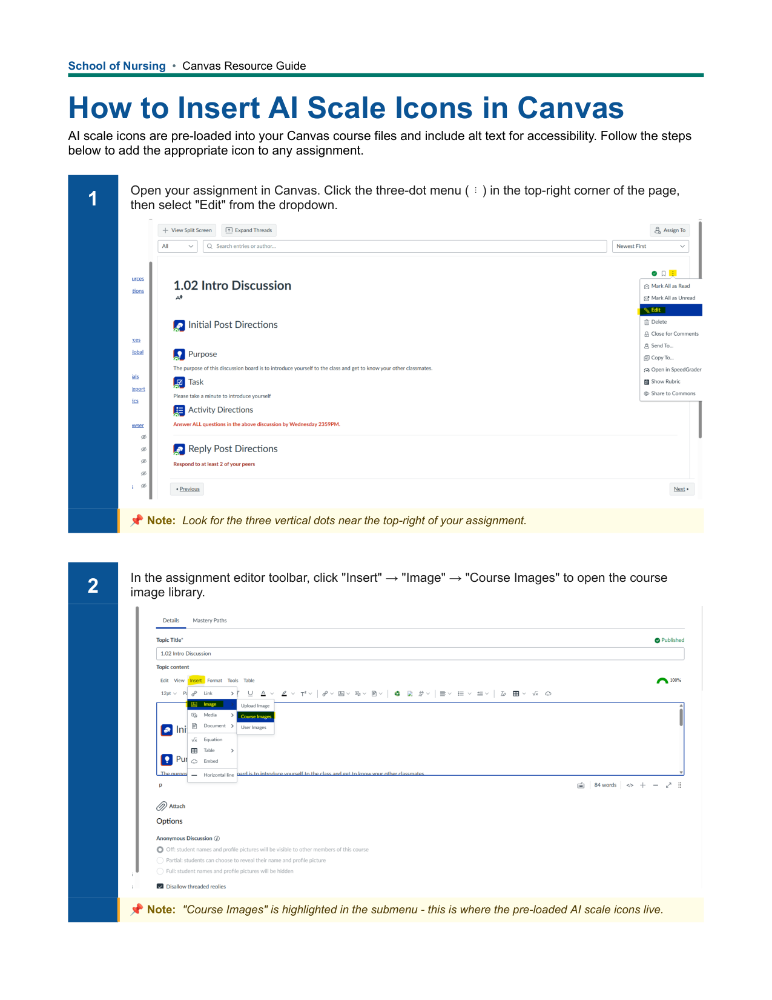

Standardizing AI Use Expectations in the School of Nursing
A shared system for communicating AI use at the assignment level
As a member of the SON AI Task Force, I worked on a shared system for communicating AI use at the assignment level.
- Audience
- School of Nursing faculty and students
- Responsibilities
- SON AI Task Force member; shared library of standardized icons; one-page faculty guide; HTML version of the scale for Canvas pages
- Tools
- Canvas LMS, AI Assessment Scale (Perkins, Furze, Roe & MacVaugh, 2024), HTML
Context
Generative AI is changing how students learn and how faculty think about assessment. Boise State has left AI rules to individual instructors, so expectations in the School of Nursing have depended on each course. As a member of the SON AI Task Force, I worked on a shared system for communicating AI use at the assignment level.
Problem
Students met different AI rules in every course, usually in a single syllabus paragraph. Faculty were reworking assignments for a new technology, and many had no simple way to explain what was allowed and why. A blanket statement did not fit assignments that call for very different levels of AI use, and rules without a rationale can push students toward the behavior they are meant to prevent.
Approach
The Task Force proposed that the School adopt the AI Assessment Scale (Perkins, Furze, Roe & MacVaugh, 2024), a five-level scale with consistent definitions, and that each assignment carry a matching icon and a short “why” explaining the choice. We recommended it over a three-level scale because the middle level leaves too much gray area and pushes faculty to write their own definitions.
I created a shared library of standardized icons, embedded in each Canvas course, along with a one-page guide for adding them to assignments. I also built an HTML version of the scale for Canvas pages.
Artifact: AI Icon Faculty Guide
The guide faculty use to add AI scale icons to assignments in Canvas.

The guide walks faculty through six steps: open the assignment editor, insert an image from Course Images, choose the AI scale icon that matches the assignment, set it to Extra Large, and add a sentence explaining the reason for the level chosen. The icons are pre-loaded in each course and include alt text.
Outcome
Out of the ten first semester PreLicensure Nursing courses, six courses have currently adopted the icon system. We are currently looking into gathering student perception and impact.
Reflection
Clear expectations matter for students in any assignment, and AI is no exception. Faculty keep their academic freedom to set the level. What the system standardizes is how that level is communicated, so students can focus on the learning.
Asking instructors to explain their reasoning also makes them think through what each assignment is meant to assess.
More projects
- Course Readiness for the School of NursingLaunching every nursing course, every semester
- Accessibility in Nursing Canvas CoursesReviewing and correcting course accessibility with faculty, and catching new issues before launch
- BS-DNP Online Course Template RedesignA new course template for the online BS-DNP program, built with eCampus, the program director, and faculty